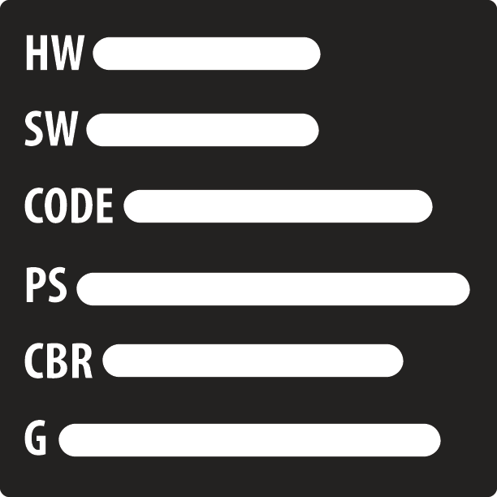

Excel
My Name Is Erikas Aguilar, I'm 19 years old, and I'm a student at Year up. Before I was a Year Up student, I was a student at farragut Career Academy; I graduated on June 4th, 2014. Then I attended Richard Daley College for a cemester and I found out about Year Up through my high school internship, Urban Alliance. I decided to apply because it was a better way of getting my education since It is economicly beneficial considering how it's a free program. Once I graduate Year Up I will get a stable job and go back to school to get my degree. I will also be working on some of my hobbies.
In high school, during my senior year, I was in an internship with Urban Alliance. They helped me apply to college among other things. I attended Richard Daley for a semester and found myself in an economical bump. I then decided to apply to Year Up because it seemed like a great program and I decided to take a chance. To my surprise, the program is exactly what they said it was and now i'm greatful that I was given this opprtunity. I'm learning about hardware, software, web delopment, professional skills, and life skills. The program is more than just technology. It also offers advising with personal issues and just issues that you migth have with some of your classes.
After my succesful graduation of the program, I will find a stable job and then go back to college to finish my education. While doing this I also plan to work on my some of my hobbies such as sewing and learning more about biology. These are two of the things that I enjoy doing on my free time and would like expand my knowledge on them. One thing that I really want to learn in regards to sewing is learn how to tailor all clothes. For instance, suits and pants. Not only is it convinient, but also fun for me.
Interesting facts about me
- I have a cat
- Enjoy gardening
- Like taking long walks
- My favorite food is sea food
